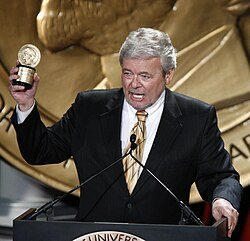

George Knapp
Las Vegas TV journalist

An investigative reporter who broke Bob Lazar's story in 1989 and has covered UFOs and Skinwalker Ranch for decades. He co-wrote Hunt for the Skinwalker and Skinwalkers at the Pentagon. 1,2,3
Open in the interactive Watcher
Related
- Bob Lazar goes public Interviewed Bob Lazar in 1989
- Hunt for the Skinwalker Co-wrote Hunt for the Skinwalker
- Skinwalkers at the Pentagon Co-wrote Skinwalkers at the Pentagon
- Skinwalker Ranch
Sources
- George Knapp (television journalist) Wikipedia
- Bob Lazar Wikipedia
- Skinwalker Ranch Wikipedia